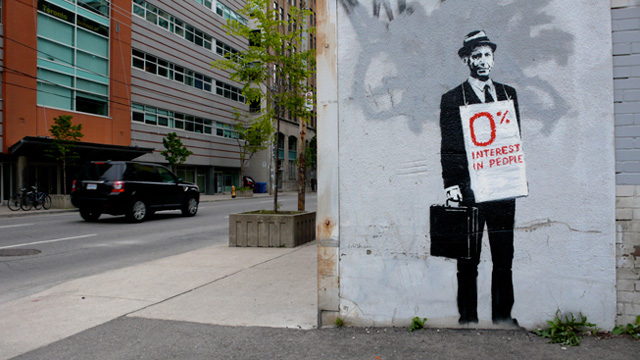

Credit
This Banksy art piece shows a salesman with an aim to attack the a capitalist society where respect for people can often be viewed as less important than commodities. The graffiti lasted only a couple of days before it was painted over by store staff. It shows that he wants people to underatnd other human beings as well.
2010-05
Spray Paint
Toronto, CA